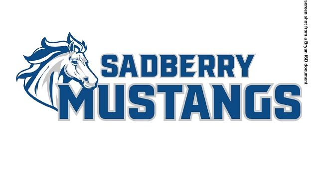

Welcome to Sadberry Intermediate School

Education:
Sadberry Intermediate School provides a comprehensive and personalized
education for students including:
-
A fun and interactive learning experience, motivating kids to learn
-
Sadberry Intermediate provides online safety and protection by teaching
kids about cybersecurity and safety through Neptune Navigate
-
Sadberry Intermediate teaches Real-World skills like communication and
critical thinking.
extracurriculars:
-
fine arts: students can participate in activities like art, music, and
theatre
-
Intramural Sports: Opportunities are available for students to join
sports teams and participate in friendly competitions.
-
Career & Technical Education (CTE) - Programs designed to introduce
students to career-related skills and technical learning pathways
Sadberry's vision:
Sadberry Intermediate's vision is centered on fostering a supportive,
engaging, and inclusive environment for its students. The founding
principal, Alfred Scott, emphasizes the importance of engaging every
student daily and ensuring consistency and longevity to build a successful
educational community. The school's leadership is also deeply committed to
building a legacy that honors its namesake, O.W. Sadberry Sr., and his
family, while setting a strong foundation for future students to thrive
academically and personally